Aula 4 -
Checkpoints
Checkpoints são locais onde o jogador pode renascer caso tenha morrido, assim ele não perderá o progresso que fez no jogo até aquele ponto.
Nossos checkpoints serão representados por tochas que podem ser acendidas ou apagadas. Uma tocha acendida indica que o jogador já passou por aquele checkpoint e uma tocha apagada indica que ainda não passou. Vamos dar a ideia de que o jogador está acendendo as tochas ao tocar nelas.
Por fim, quando o jogador morrer, deverá reaparecer na última tocha que acendeu.
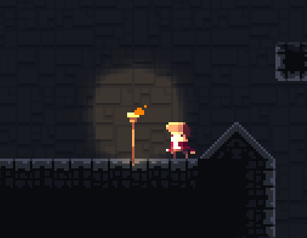
Vamos começar pela parte visual, precisaremos de três arquivos, dois deles serão objetos do tipo Sprite (a tocha e a luz ao redor dela) e um dele será um objeto do tipo Particles (o fogo)
Vamos adicionar a tocha, adicione um novo objeto do tipo Sprite e coloque a imagem que está no arquivo Scenario/torch-sheet0.png 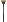
Nós iremos fazer partículas que representam fogo aparecerem no topo da tocha, para isso usaremos o ponto de origem, por isso, precisamos deslocá-lo para o topo da imagem, A forma mais simples de fazer isso é indo no menu de edição dos pontos, clicar com o botão direito do moude em Origin e escolhendo a opção Quick Assign > Top
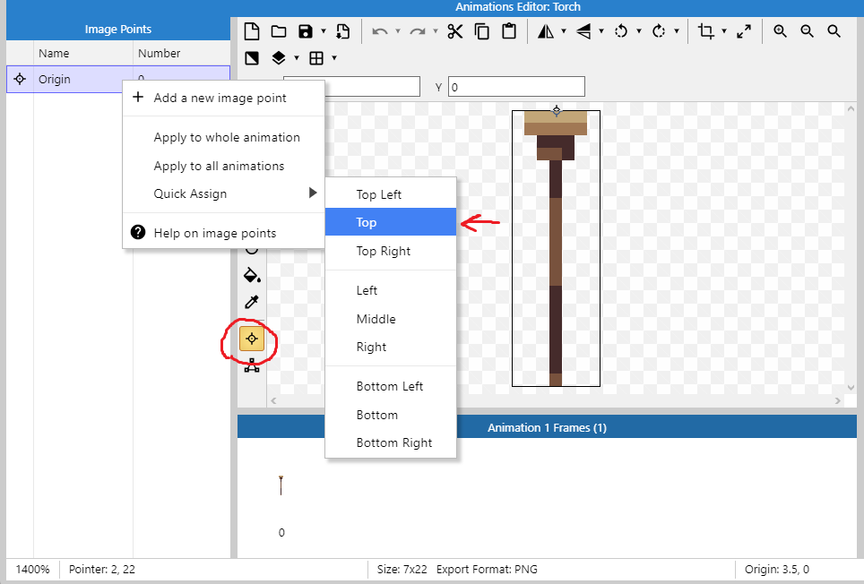
Defina o nome desse objeto como Torch
Vamos adicionar uma variável de instância ligada a cada tocha, ela indicará se a tocha está acesa ou apagada, seu nome será Activated
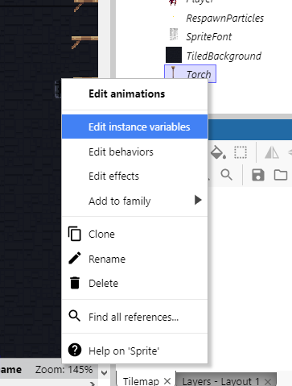
Clique na opção Add new instance variable, coloque o nome para a variável e defina o tipo como Boolean
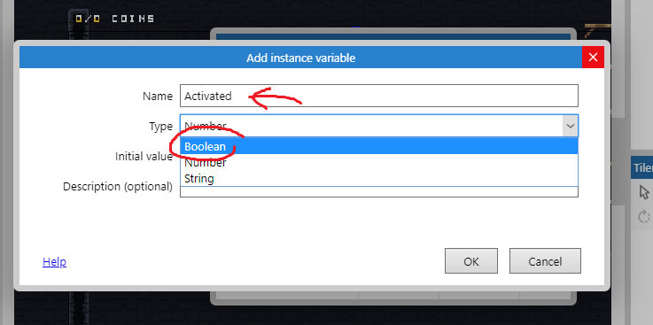
Agora vamos adicionar um outro objeto do tipo Sprite para fazer o efeito de iluminação, use a imagem em Visual Effects\light-sheet0.png
Defina o nome desse objeto como LightEffect
Nela vamos aplicar alguns comportamentos e efeitos:
Os comportamentos Sine e Fade, o primeiro dará uma ondulação na quantidade de luz e o segundo tornará possível que façamos um efeito de fade-in quando a luz aparecer
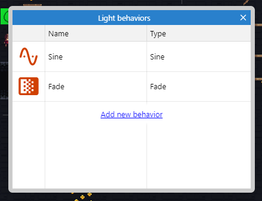
O efeito Dodge para mesclar a imagem com o fundo do jogo
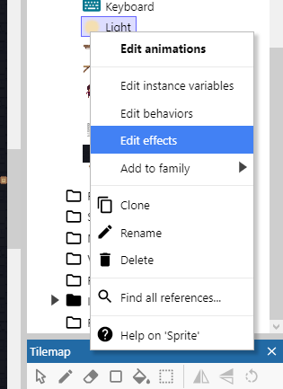
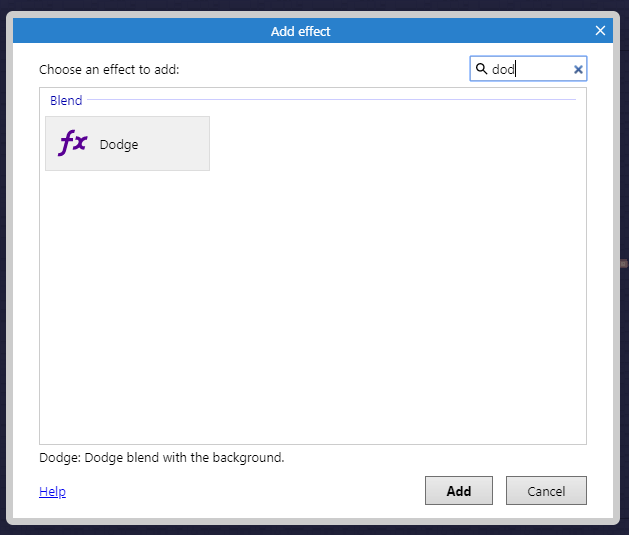
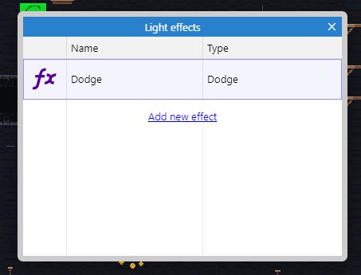
Nas propriedades, as seguintes alterações devem ser feitas
No comportamento Sine:
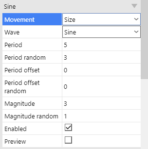
No comportamento Fade:
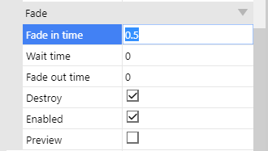
Agora adicione um novo objeto do tipo Particles, ele deverá se chamar FireParticles. Encontre a imagem para o objeto em Particles/col_fire.png 
Vá nas propriedades dele e coloque o seguinte:
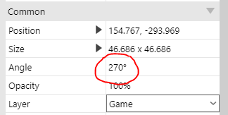
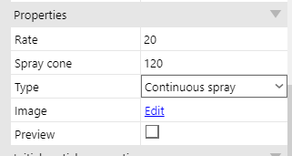
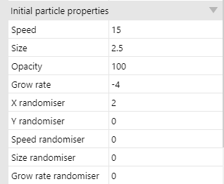
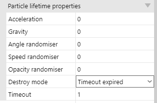
Apenas a imagem da tocha deve ser mostrada no jogo, as outras devem estar no layout mas fora da área que o usuário pode ver.
Vamos fazer a parte da programação. Primeiramente precisamos criar duas variáveis globais do tipo number, CheckpointX e CheckpointY elas armazenarão a posição X,Y do último checkpoint que o jogador ativou permitindo que ele renasça lá caso morra.
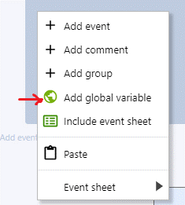
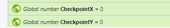
Agora faremos com que quando o jogador tocar em uma tocha que não foi ativada ainda ela seja marcada como novo checkpoint e comece a queimar.
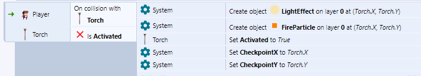
Esse código deve fazer:
Quando o jogador encostar em uma tocha e essa tocha não estiver ativada:
- Crie o efeito de luz no ponto de origem da tocha (ele será criado com um efeito de fade e no topo da tocha, já que colocamos lá o ponto de origem)
- Crie as partículas que fazem o fogo ponto de origem da tocha
- Troque o estado da tocha para ativada (se não fizermos isso mais fogo e mais efeitos de luz serão criados por cima dessa tocha quando o jogador tocar nela novamente)
- Defina a variável global
CheckpointXpara a posiçãoXda tocha que o jogador acabou de encostar - Defina a variável global
CheckpointYpara a posiçãoYda tocha que o jogador acabou de encostar
Quando você fizer isso e executar verá que, no jogo, as tochas que o jogador tocar se acenderão. Mas temos um problema, onde o jogador deve renascer caso ele morra antes de tocar em qualquer tocha? Vamos fazer com que a tocha mais próxima dele seja o checkpoint assim que o jogo começar, então lembre-se de colocar uma tocha ao lado dele no seu cenário, caso contrário o jogador pode se matar no começo do jogo para aparecer num checkpoint distante.
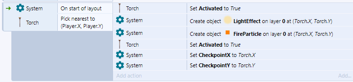
As condições são:
Quando o layout começar, pegue o objeto Torch mais próximo da posição X,Y do jogador
O código a executar é exatamente o mesmo do bloco anterior, você pode copiar e colar. Você perceberá que a tocha mais próxima do jogador será acesa sozinha ao iniciar o jogo.
Agora precisamos introduzir alguma forma do jogador morrer para testarmos se os checkpoints funcionam, faremos com que o jogador morra caso caia fora do cenário.
Vamos adicionar um efeito visual quando o jogador renascer, precisamos criar um novo objeto do tipo Particles com a imagem Particles/torch_fireyellow.png com o nome RespawnParticles
As propriedades devem ser as seguintes:
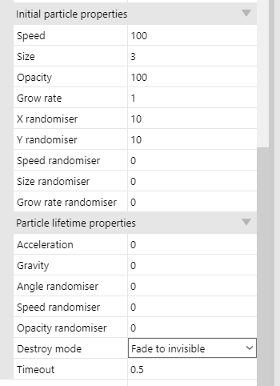
O programa deverá ser o seguinte:
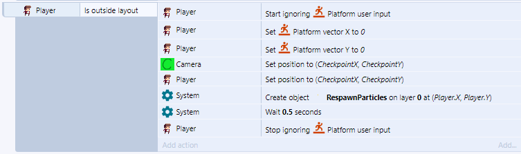
Quando o jogador estiver fora do layout
- Ativar a opção de ignorar os comandos de movimento (Evita que o jogador se mova enquanto está caindo ou logo após renascer)
- Defina o vetor de velocidade no eixo X como 0 (Evita que o jogador caia muito rapidamente ao renascer)
- Defina o vetor de velocidade no eixo Y como 0 (Evita que o jogador ande para os lados ao renascer caso tenha morrido correndo)
- Mova a câmera para o checkpoint
- Mova o jogador para o checkpoint
- Crie o objeto
RespawnParticlesaonde o jogador está - Espere meio segundo
- Permita que o jogador se mova
Note que o personagem deve morrer quando cair para fora do layout, isso inclui
- Pular e cair infinitamente
- Ir até o fim do jogo para a direita ou para a esquerda
- Pular muito alto (ultrapassando o fim do layout)
Por isso, é necessário que você impeça ele de pular muito alto adicionando um teto ao jogo, caso contrário ele pode morrer por pular para fora do cenário. Uma outra alternativa é deixar o fim do jogo bem alto de forma que se o jogador escalar no ponto mais alto do jogo e pular, ainda não alcançará o fim do layout
Dica:
Clique na parte cinza (fora de qualquer objeto), na aba de propriedades serão mostradas as propriedades do projeto como um todo, marque a opção Show Grid, Snap to Grid e defina Grid size como 16x16 (ou o tamanho dependendo do projeto, normalmente 16x16, 32x32, 64x64 ou 128x128)
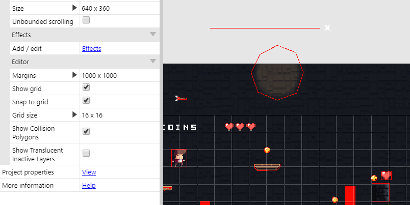
Caso ache interessante, pode ativar a opção Show Collision Polygons que mostrará os polígonos de colisão dos objetos no jogo.
Redimensionando o cenário
Agora que temos vários dos itens que irão compor o jogo, podemos começar a pensar e construir um cenário em definitivo, algumas dicas são:
Tenha um esboço feito de antemão, com ele tente deduzir
- A largura do cenário
- A altura do cenário
Quando for pintar o cenário, comece do centro esquerdo
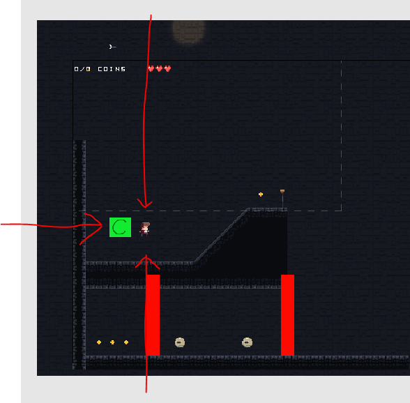
- Sempre adicione paredes e um teto para evitar que o jogador mora por pular muito alto, por exemplo.
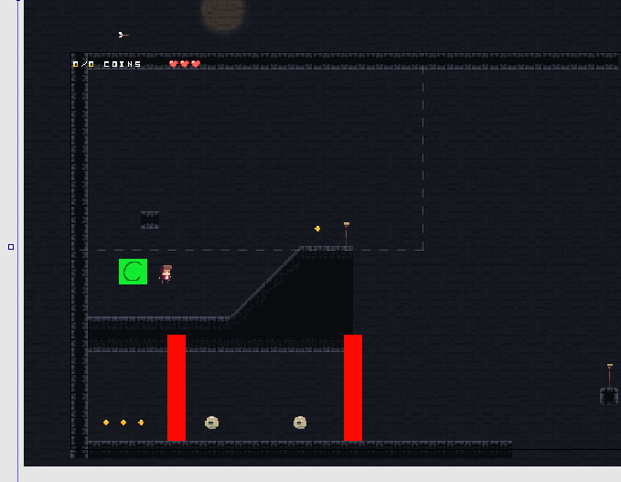
Para redimensionar, clique na parte cinza do layout (fora de qualquer objeto), as propriedades do projeto em si aparecerão na lateral.
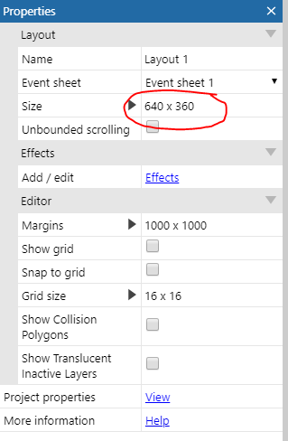
Mude o atributo Size dependendo do tamanho do cenário que você pensou, lembre-se de que cenários muito grandes deixarão o jogo mais lento.
Inimigos
Vamos começar a criar um inimigo simples que patrulhará uma área. Crie um novo objeto do tipo Sprite e crie uma animação com as imagens em Enemy\PatrolSlimePatrol\ 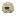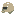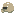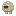. O nome desse objeto deve ser
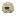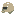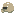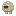. O nome desse objeto deve ser Enemy.
Crie a caixa de colisão para ele e aplique a todos os quadros da animação

Dê um nome para a animação, defina a velocidade e marque a caixa de loop
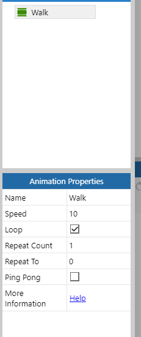
Você precisará adicionar as seguintes variáveis de instância
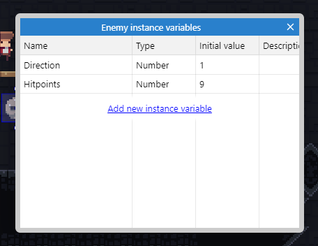
A variável Direction será utilizada para definir a direção que o inimigo deve andar e a variável Hitpoints guardará a vida do inimigo.
Direction deverá receber o número 0 ou o número 1, Hitpoints deverá receber quantos pontos de vida o inimigo vai ter contando com a força do ataque do jogador. Como quero que o inimigo morra com 3 ataques de uma arma mediana, defini este valor como 9, cada ataque do jogador tirará 3 pontos de vida, assim, serão precisos 3 ataques.
Agora adicione mais um objeto do tipo Sprite e pinte-o de vermelho ou qualquer cor que se destaque.
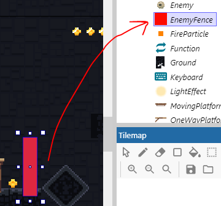
Dê o nome de EnemyFence. Esse objeto definirá a área que um inimigo deve fazer sua patrulha, elas ficarão invisíveis no jogo e quando um inimigo tocar em uma delas irá passar a patrulhar no sentido oposto.
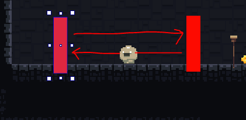
Algumas configurações no sprite Enemy devem ser feitas, adicione o comportamento Platform e defina as seguintes propriedades
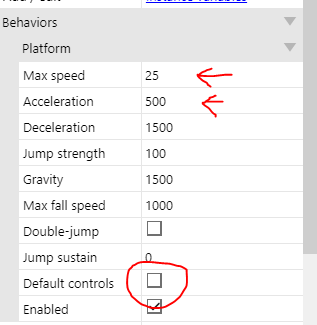
Não se esqueça de desmarcar a opção Default Controls, assim será possível controlar o movimento do inimigo pelo programa e não com o teclado.
Coloque as barreiras ao redor da área de patrulha do inimigo e vamos começar a configurar a lógica dela. Crie estes blocos:

Caso a variável Direction seja 0 o inimigo andará para a Direita, caso seja 0 andará para a Esquerda. Precisamos fazer com que se o inimigo tocar na barreira o número em Direction mude de 0 para 1 ou de 1 para 0.
Existem duas formas de fazer isso, essa é a mais simples de entender, mas gasta mais eventos.
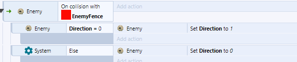
Quando o inimigo colidir com a barreira:
x*Se o conteúdo em `Direction` for `0`*:*Mude o valor em `Direction` para `1`**Caso contrário**Mude o valor em `Direction` para `0`*
Para adicionar a condição e o else você precisará ir em Add new > Sub event
Para adicionar a condição e o else você precisará ir em Add new > Sub event
Para adicionar a condição e o else você precisará ir em Add new > Sub event
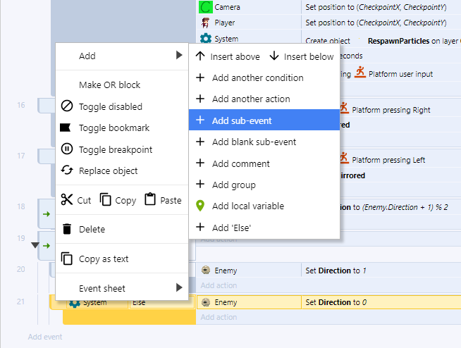
Dessa forma o inimigo patrulhará entre as duas cercas. Se você quiser poupar a quantidade de eventos pode fazer o seguinte:
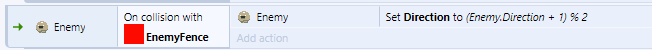
Na fórmula (Enemy.Direction + 1) % 2 estamos usando algo chamado operação modular não é fundamental que você a compreenda mas saiba que ela causa o mesmo resultado que a operação anterior.
Caso queira saber mais sobre o operador módulo veja:
Khan Academy - Aritmética modular
TI Expert - O que é a operação módulo?